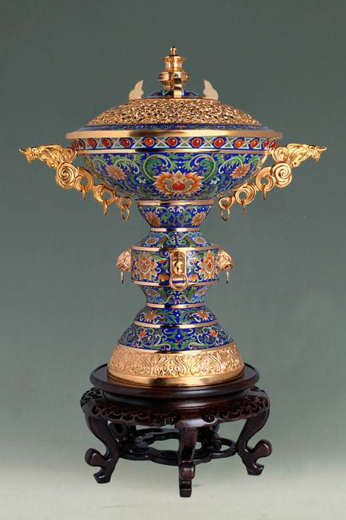
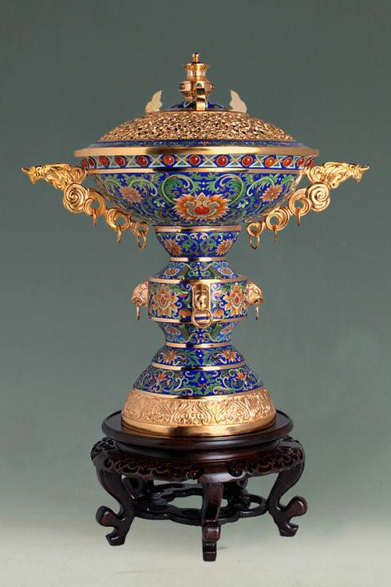

成功复原“新中国第一份国礼”：景泰蓝《和平鸽大圆盘》 这件被誉为“新中国第一份国礼”的景泰蓝《和平鸽大圆盘》经过艺术教育家、设计家常沙娜和工艺大师的努力，已成功复原。这件作品在中国工艺美术馆·中国非物质文化遗产馆的“花开敦煌——常沙娜从艺八十年艺术与设计展”中展出。
景泰蓝（Cloisonne），又称做“铜胎掐丝珐琅”，是一种将铜与珐琅结合，经过多道工序烧制而成的工艺品。由于工艺繁琐、复杂，代表着中华民族传统工艺的巅峰，景泰蓝是国家级非物质文化遗产之一。 [5] 清康熙十九年（1680年）后，内廷设立珐琅厂，后改为珐琅作。在曹雪芹著《红楼梦》中，有多处提到珐琅器，如第四十回写“每人一把乌银洋錾自斟壶，一个十锦珐琅杯”，第五十三回写有“鎏金珐琅大火盆”。十锦珐琅杯可能是瓷胎画珐琅器，而鎏金珐琅大火盆则肯定是金属胎珐琅器。景泰蓝的工艺已经传承数百年，并于2006年5月20日入选第一批国家级非物质文化遗产名录。